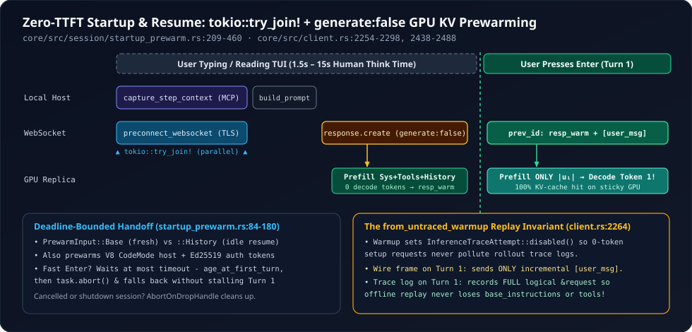

2. Zero-TTFT generate: false Prewarming: Warming GPU KV Caches While the User Types
Between launching codex in a terminal (or resuming a saved thread) and pressing Enter on a prompt, a human developer spends anywhere from two to twenty seconds typing. Almost every coding agent wastes 100% of that window sitting completely idle—only starting DNS lookup, TLS 1.3 handshake, WebSocket upgrade, JSON upload, and tens of thousands of tokens of GPU prefill after Enter is pressed. Inside core/src/session/startup_prewarm.rs and core/src/client.rs, OpenAI Codex exploits human typing time to pre-dial the WebSocket in parallel with MCP tool discovery and execute a zero-decode generate: false prefill pass on the target GPU replica before Turn 1 even begins.
1. Decomposing First-Turn Time-to-First-Token ($\text{TTFT}_1$)
On a cold session or resumed 80k-token thread, Turn 1 carries static prefix tokens $L_{\text{prefix}} = |P_{\text{sys}}| + |P_{\text{tools}}| + |H_{\text{resumed}}|$ plus the user’s newly typed prompt $u_1$ of length $|u_1| \ll L_{\text{prefix}}$. Without prewarming, perceived $\text{TTFT}_1$ after hitting Enter stacks four serial latencies:
When $L_{\text{prefix}} = 60{,}000\text{ tokens}$ (a resumed session with 50 MCP tools) and $|u_1| = 40\text{ tokens}$, moving $t_{\text{MCP/tools}}$, $t_{\text{TCP+TLS+WS}}$, prefix upload, and $c_{\text{prefill}}\,L_{\text{prefix}}$ into the user’s typing window shaves 1.2 to 3.5 seconds off the very first token!

schedule_startup_prewarm_inner (startup_prewarm.rs:306-460), local tool capture and remote WebSocket dialing run concurrently via tokio::try_join!, followed immediately by a generate: false prefill frame that yields a reusable response_id.2. tokio::try_join! Parallel Setup & Base vs. History Modes
Look at how schedule_startup_prewarm_inner (startup_prewarm.rs:374-418) refuses to let local tool discovery serialize against network connection setup:
// codex-rs/core/src/session/startup_prewarm.rs (lines 374-418, condensed)
// Start the handshake with the expected route while capturing tools for generate=false.
let (step_context, ()) = tokio::try_join!(
async {
let step_context = session
.capture_step_context(Arc::clone(&startup_turn_context), &startup_cancellation_token)
.await?;
Ok(step_context)
},
client_session.preconnect_websocket(
&preconnect_model_info,
preconnect_service_tier,
&startup_turn_context.session_telemetry,
&handshake_metadata,
),
)?;
let prompt_input = match input {
PrewarmInput::Base => Vec::new(),
PrewarmInput::History => {
// Use the same history projection and tool metadata as a sampling request.
// The real turn still checks this prefix before reusing the prepared response.
let mut history = session
.clone_history()
.await
.for_prompt(
&step_context.settings.model_info.input_modalities,
session.services.image_store.as_ref(),
)
.await;
session
.services
.executed_tool_calls
.attach_to_prompt(&mut history, &mut HashMap::new());
history
}
};Three subtle architectural choices stand out in startup_prewarm.rs:
- Two-Tier Warmup Inputs (
PrewarmInput::Basevs.PrewarmInput::History): Fresh sessions launch withPrewarmInput::Base(session.rs:2040), warming system instructions and tool declarations. Resumed or idle threads schedulePrewarmInput::History—running the exact same multimodal image projection (for_prompt) and tool-call inventory attachment (attach_to_prompt) as a real sampling step so the warmup prefix matches Turn 1 byte-for-byte! - Co-Warming Auxiliary Subsystems (
startup_prewarm.rs:233-254): Alongside the LLM WebSocket,schedule_startup_prewarmconcurrently spawns background tasks to boot the out-of-process V8CodeModeServiceisolate (Feature::CodeModePrewarm) and resolve Ed25519 Agent Identity bearer tokens (model_client.prewarm_auth()) when WebSockets are disabled. - Zero-Await Lock Discipline (
startup_prewarm.rs:211-231): Before registeringSessionStartupPrewarmHandle, Codex checks!state.shutting_downand uses a non-blockingself.active_turn.try_lock()to verify no turn is already running. If an older prewarm handle already finished unused (e.g., across multiple idle resumes),drop(completed)returns itsModelClientSessionback to the socket cache before re-checking whether the socket stayed open!
3. Inside generate: false & Deadline-Bounded Turn Handoff
Once startup_prompt is built, client_session.prewarm_websocket (client.rs:2289-2298, 2438-2488) sends a v2 response.create WebSocket frame with generate: Some(false) and awaits ResponseEvent::Completed:
// codex-rs/core/src/client.rs (lines 2289-2298 & 2471-2480, condensed)
let mut ws_payload = ResponseCreateWsRequest {
previous_response_id,
input: incremental_items.as_deref().unwrap_or(&request.input),
generate: if warmup { Some(false) } else { None },
client_metadata: response_create_client_metadata(Some(client_metadata), request_trace.as_ref()),
..ResponseCreateWsRequest::from(&request)
};
// ...
Ok(WebsocketStreamOutcome::Stream(mut stream)) => {
// Wait for the v2 warmup request to complete before sending the first turn request.
while let Some(event) = stream.next().await {
match event {
Ok(ResponseEvent::Completed { .. }) => break,
Err(err) => return Err(err),
_ => {}
}
}
Ok(())
}On the server, generate: false populates the GPU KV cache, pins the sticky-routing token x-codex-turn-state, and emits a valid response_id without billing or sampling output tokens. When the user finally submits Turn 1, consume_startup_prewarm_for_regular_turn (startup_prewarm.rs:84-180, 290-303) resolves the handle safely under every timing race:
| User Timing Scenario | SessionStartupPrewarmHandle::resolve Behavior | Turn 1 Wire Outcome |
|---|---|---|
| Normal ($t_{\text{type}} > t_{\text{prewarm}}$) | task.is_finished() == true; resolves in $O(1)$ without waiting. | Reuses warm socket + previous_response_id; uploads only user prompt delta $[u_1]$. |
| Fast Typist ($t_{\text{type}} < t_{\text{prewarm}} < T_{\text{timeout}}$) | Awaits at most remaining = timeout.saturating_sub(age_at_first_turn). | Inherits in-flight warmup the instant ResponseEvent::Completed arrives—avoiding duplicate connections. |
| Stalled Network ($t_{\text{prewarm}} \ge T_{\text{timeout}}$) | tokio::time::timeout(remaining, &mut task) expires $\implies$ calls task.abort() and returns Unavailable { status: "timed_out" }. | Turn 1 opens a fresh connection / HTTP fallback cleanly with zero deadlock. |
| User Changes Model / Effort Before Turn 1 | Warmup session is consumed, then prepare_websocket_request checks responses_request_properties_mismatch (client.rs:1636). | Reuses the warm TLS/WebSocket connection, while safely falling back from incremental to full payload! |
4. The from_untraced_warmup Replay Invariant
There is a wickedly subtle interaction between generate: false delta compression and offline rollout debugging. Because warmup is transport setup rather than an inference step, Codex disables trace recording during warmup (InferenceTraceAttempt::disabled(), client.rs:2260). Now trace what would happen on Turn 1 if the trace logger recorded what went over the WebSocket wire:
- On the WebSocket wire: Turn 1 references
previous_response_id = resp_warmand sends only the incremental user messageinput = [u_1], omittingbase_instructions,tools, and 80k tokens ofHistoryalready sent in the untraced warmup! - In offline rollout traces: Because
resp_warmwas intentionally untraced, recording only the wire delta[u_1]would make Turn 1’s trace completely un-replayable—its system prompt, tools, and prior context would vanish!
Lines 2264-2269 of core/src/client.rs close this exact gap:
// codex-rs/core/src/client.rs (lines 2264-2269)
if previous_response_id_from_untraced_warmup {
// The transport can reuse an untraced warmup response id and omit the
// already-sent input, but rollout replay needs the logical model-visible
// request rather than the compressed websocket delta.
inference_trace_attempt.record_started(&request);
}5. Questions worth answering
handlers.rs:310-317 explicitly take_session_startup_prewarm() and call startup_prewarm.abort().await during session shutdown?schedule_startup_prewarm clones Arc<Session> into its spawned Tokio task (startup_prewarm.rs:258). Explicitly taking and aborting the handle during shutdown releases that Arc<Session> immediately and closes any half-opened prewarm socket before ShutdownComplete fires.
startup_prewarm.rs:436-438 recompute session.responses_metadata(...) after capture_step_context even though it already built handshake_metadata on line 359?Because preconnect_websocket needed headers immediately at t = 0 before tool discovery ran, whereas capture_step_context may discover MCP/plugin state that updates Responses Lite or turn metadata headers needed for the subsequent response.create warmup frame!